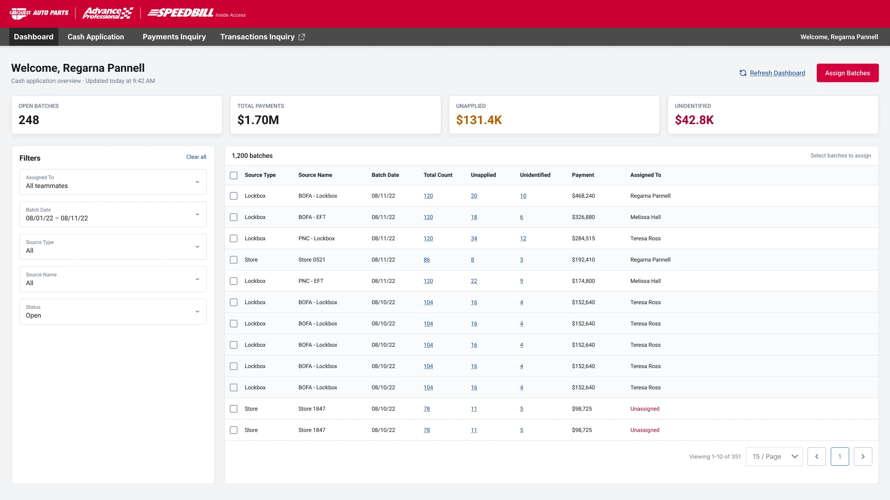
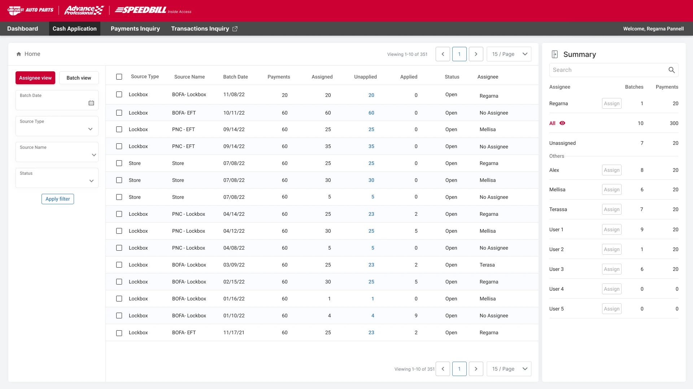
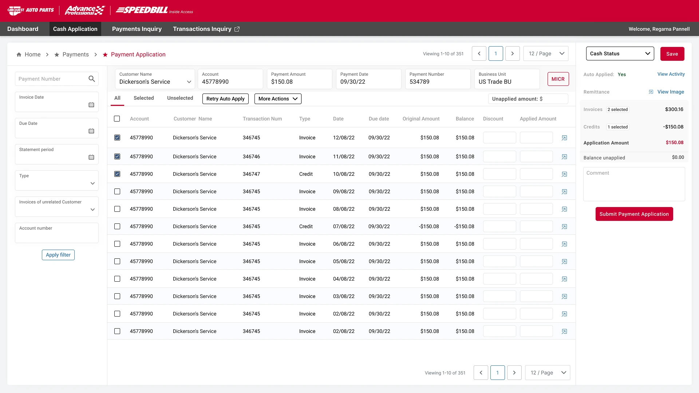

Define the actors
The experience separated team-level monitoring and assignment from the focused work completed by an individual assignee.
Case study / 03Financial operations
Advance Auto Parts
A net-new Cash Application experience that helps teams monitor incoming payment batches, assign ownership, and apply cash against customer invoices and credits.

01 / Context
A new operational layerSpeedBill already supported established business activity. Advance Auto Parts needed a dedicated way to manage the payment transactions flowing through its showroom network.
I designed the Cash Application experience from the ground up while keeping it visually and behaviorally connected to the existing product framework.
The core design problem was not simply displaying transactions. It was turning large payment batches into understandable, assignable work—and giving each assignee enough context to apply a payment accurately.
Payments arrived through different sources and needed one scannable operating view.
Batches had to be distributed to the right teammate without losing status or accountability.
Unapplied and unidentified amounts needed to remain visible instead of disappearing inside tables.
Invoices, credits, balances, and cash status had to stay connected during a precise financial task.
02 / Product model
Requirements into structureI translated the requirements into a shared workflow model so navigation, statuses, filters, and actions could follow the same operational logic.
The experience separated team-level monitoring and assignment from the focused work completed by an individual assignee.
Batches, payments, customer accounts, invoices, credits, and balances were treated as one traceable system.
Unapplied and unidentified amounts were elevated because they signal the work that still needs attention.
Role profiles created from the supplied workflow and product requirements—not presented as research-validated personas.
Operations view
Responsible for understanding daily payment volume, balancing work across the team, and keeping unresolved cash visible.
Task view
Works through assigned payments, identifies the correct customer records, and applies amounts against invoices and credits.
The product moves from team-level awareness into individual financial action, while preserving state between stages.
03 / Design response
Control without clutterThe interface moves from operational awareness to ownership and then into careful payment application, without forcing users to rebuild context at each step.
Summary cards and a structured batch table reveal payment volume, unresolved amounts, assignment, and current status at a glance.
Assignee and batch views support different mental models while filters and summaries keep workload ownership visible.
Payment context, selectable invoices and credits, running totals, cash status, and the final submit action remain in one workspace.
Existing SpeedBill navigation, spacing, tables, controls, and brand cues were reused so the new module felt native to the wider product.
04 / Final experience
From overview to actionThe delivered direction establishes a single operating path for understanding payment volume, distributing work, and completing the application task.
Batch volume, payment value, and unresolved amounts share one decision surface.
Each batch can be connected to a responsible teammate and tracked by status.
Unapplied and unidentified amounts remain prominent throughout the workflow.
Invoices, credits, totals, and submission controls stay together during payment application.
Three connected views covering monitoring, assignment, and detailed payment application.


The design keeps ownership, exceptions, balances, and the effect of an action in view. That continuity is what allows a dense enterprise workflow to feel controlled rather than overwhelming.